Lecture 16: Modern file systems
Exam
Modern file systems (FS)
Important questions:
- What are the challenges for file systems today?
- How can the reliability of disk storage be improved?
- How can the performance of disk storage be improved?
- What is the Unix block buffer cache and how does it work?
- What is logical volume management and why is it useful?
- What is RAID?
- Which different RAID levels exist and how do they work?
- Can you discuss the pros/cons of the different levels?
- What is a journaling/log structured file system?
- How do they work, what are differences to traditional FS?
What do we know about storage so far?
- Disk drives have a block structure and provide random access
- Locality of disk accesses is crucial to enable high performance
- head movements are especially costly – multiple ms
- SSDs are also block structured but have no mechanical delays
- Locality of disk accesses is crucial to enable high performance
- File systems provide abstractions to enable programs to work with persistent data
- Files and directory hierarchies
- Metadata, e.g. name, size, file creation data, …
- There are different ways to map file systems onto a disk
Challenge: Reliability (1)
- Problems:
- Defective disks or blocks
- System crashes or failures
- Impacts:
- Complete loss of data
- Defective data blocks, e.g.
- application can no longer read a file
- Inconsistent metadata, e.g.
- directory entry for a file is missing or vice versa
- block is used but marked as free
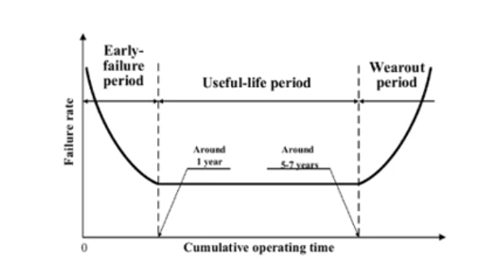 The "bath tub curve" shows the typical development of the error rate of hard disks (and most other technical products) over their lifetime
Challenge: Reliability (2)
- Solution: Backup
- Frequent incremental and complete backup of data to a different storage medium
- Problems: time and storage space overhead
- Solution: Checksums
- Files can be annotated with a checkum (error detection) or an error-correcting code (repair)
- Problems: storage space overhead; responsibility (layer)
- Solution: Repair tools
- Programs such as chkdsk, scandisk or fsck are able to repair (some) inconsistent metadata
- Problems: Possible loss of data in the repair process; long runtimes of the repair programs for large disks
Challenge: Performance optimization
- Problem:
- Hard disks have low read/write speeds and a high positioning latency
- CPU/main memory performance and disk performance diverge
- Impact:
- The hard disk becomes the bottleneck for I/O intensive applications (e.g. databases) and tasks (e.g. booting the system or starting a program)
- Solution: Cache
- Keep important (meta)data in main memory
- Problem: Consistency between cache and disk
Challenge: Disk management
- Problem:
- Physical dimensions of disk drives limit the size of the file system(s)
- What can be done if a disk is full? Impact:
- Disk capacity is over dimensioned to avoid the overhead of copying to a different disk
- Solution: Virtual file system
- Mount new disks as directories (using "soft links")
- Problems: not transparent for users and applications; size limitation still in place for existing directories
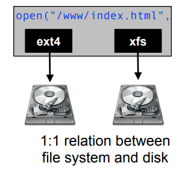
Intelligent block device (drivers)
- Idea: Handle reliability problems below the file system layer
- Advantage: all file system implementations can benefit
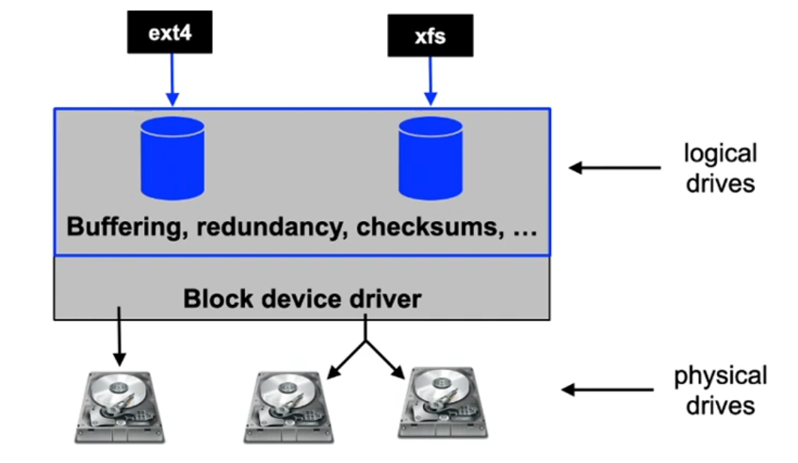
UNIX Block Buffer Cache
- Buffer for disk blocks in main memory
- Uses algorithms similar to page frame handling
- Read ahead: for sequential reads, the transfer of subsequent data blocks is initiated
- Lazy write: a block is not written to disk directly
- allows optimization of write accesses and does not block the writer
- Free block management in a free list
- Possible entries for the free list are determined using LRU
- Blocks which are already marked free but are not yet reused can be reactivated (reclaim)
UNIX Block Buffer Cache (2)
- Write to disk if/when
- no more free buffers are available
- periodically by the system (fsflush process, update process),
- when calling the sync(2) system call
- and after each write system call when the corresponding file was opened with the option O_SYNC
- Adressing
- Blocks are addressed using a tuple:
- (device number, block number)
- A hash of the address is used to select one of the possible buffer lists
- Blocks are addressed using a tuple:
UNIX Block Buffer Cache: Structure
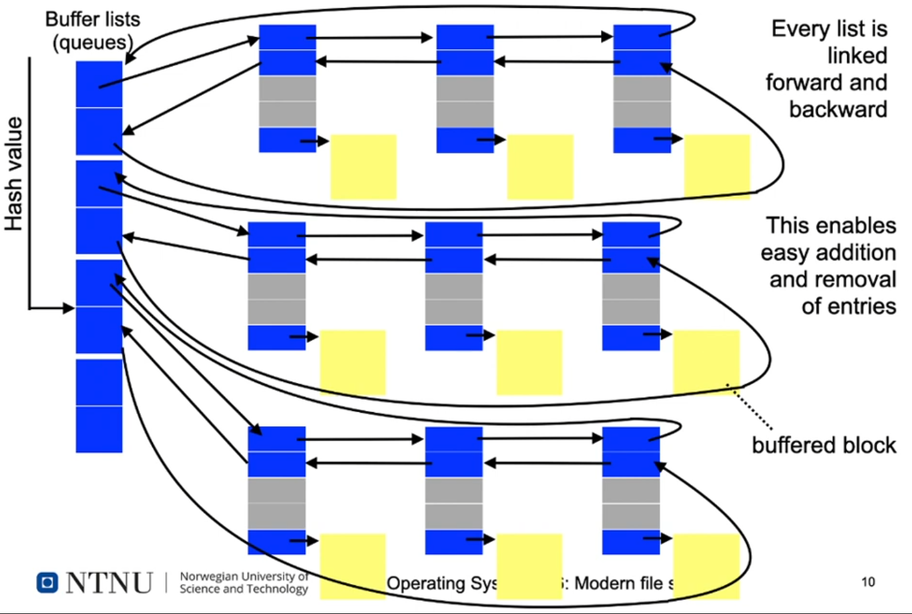
UNIX Block Buffer Cache: Structure (2)
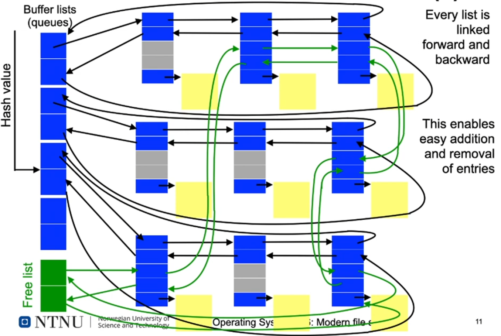
[Linux] Logical Volume Management
- 1:1 relation between file system and disk is no longer enforced
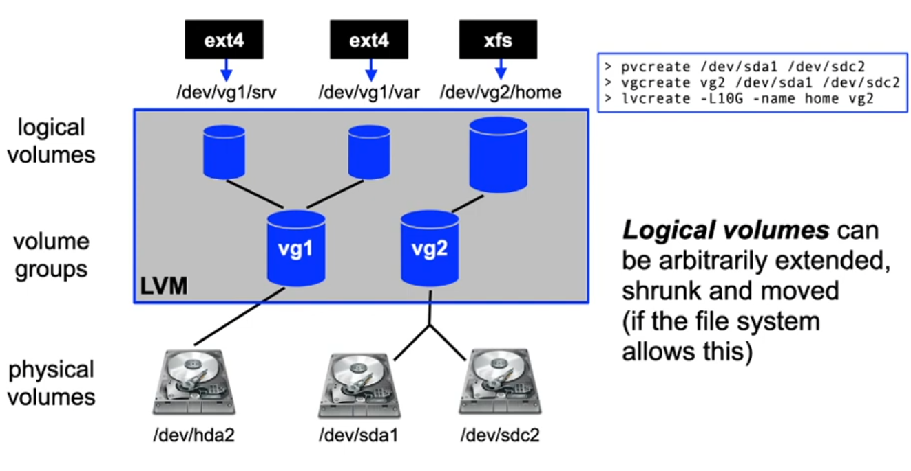
Redundant Arrays of Inexpensive Disks
(short: RAID)
- Initial idea: save costs by creating large logical disks out of inexpensive smaller disks (cost per GB)
- Additional features:
- better utilization of the available data bandwidth by using parallel transfers
- fault tolerance using redundancy
- Two variants:
- Hardware RAID: disk controller with special management software (+potentially cache)
- Software RAID: layer between disk driver and file system code
RAID 0: Disk striping
- Idea: Data of a large logical disk are stored in a round robin way distributed over N physical disks:
- Effect: increased bandwidth, since multiple disks are accessed in parallel
- Disadvantage: failure probability is multiplied by N

RAID 1: Disk mirroring
- Idea: data is stored redundantly on two disks at the same time:
- Effect: increased read bandwidth, somewhat lower write bandwidth, higher reliability by having a copy of the data
- Disadvantage: uses twice the disk space
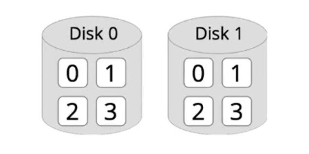
RAID 4: Additional parity disk
- Idea: data is striped over multiple disks, one disk stores the related parity
- Effect: errors (of a single disk) can be detected and fixed without a large storage overhead. Fast read operations
- Disadvantage: parity disk is bottleneck when writing
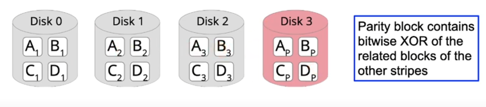
RAID 5 and 6: Distributed parity data
- Idea: distribute the parity block over all disks
- Effect: additional write overhead to update the parity block when writing is distributed
- With RAID 6, an additional parity block can be used to restore the data of two failed disks
- Disadvantage: all data is protected with high overhead, even though a part of the data may be not critical
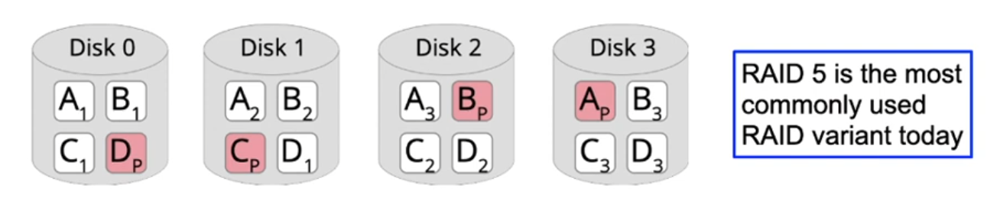
RAID x+y (= RAID xy): Hierarchies
- Idea: Combine different RAID mechanisms in a hierarchy, e.g. RAID 1+0 (= RAID 10):
- Effect: properties can be combined. Common setups: RAID 10, 50 or 60
- Disadvantage: requires a large number of disks
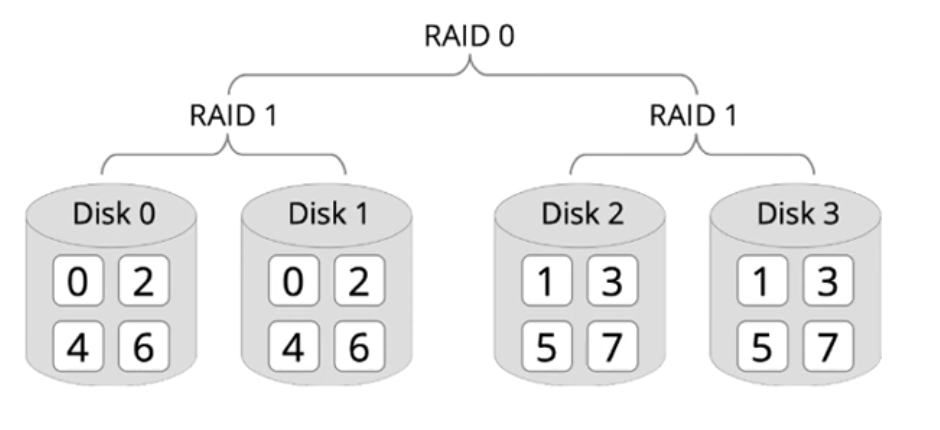
Journaled File Systems
- In addition to writing data and metadata (e.g. inodes), journaled file systems write a protocol of the changes
- All changes are part of a transaction
- Examples for transactions:
- create, delete, expand, shorten files
- change file attributes
- rename a file
- All changes to the file system are additionally stored in a protocol file (log file)
- At boot time, the protocol file is compared to the latest changes, this avoids inconsistencies
Journaled File Systems: Protocol
- A protocol entry is generated for each single operation of a transaction and…
- after this, the change to a file system is carried out
- Important conditions:
- A protocol entry is always written to disk before the change itself
- If something was changed on a disk, the related protocol entry is also found on that disk
Journaled File Systems: Recovery
- When booting a system, the operating system checks, if the changes logged in the protocol are present on disk:
- A transaction can be repeated or committed if all protocol entries are available on disk → redo
- Started transactions that have not been completed are revoked → undo
Journaled File Systems: Results
- Advantages:
- a transaction is either committed (completed) in whole or not at all
- users can define transactions that span multiple file accesses, if these are also recorded in the log
- impossible to create inconsistent metadata
- booting a crashed system only requires a fast log file check
- the alternative chkdsk takes a long time for large disks
- Disadvantages:
- less efficient, since additional log file has to be written
- thus usually only metadata journaling, no full journaling
- examples: Windows NTFS, Linux ext 3/4, IBM JFS
Log-structured file systems [1]
(short: LFS)
- Observation:
- Large caches reduce the frequency of read operations
- Write operations should not be scattered
- (Radical) approach: one log is sufficient for everything!
- Blocks are not overwritten, but only appended to the log
- Changes to metadata are also stored in the log only
- Write operations are collected in main memory and then written to disk as a single large segment (e.g. 1 MB)
- Only the superblock has a fixed position on the disk
Log-structured file systems (2)
- Example:
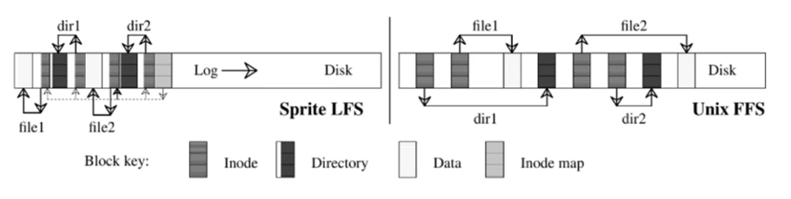
- Log works like a ring buffer: changes are added to the front, obsolete data fall out at the end
- Cleaner: process to compactify/release segments
- Effect:
- Consistency: new segments are entirely visible or not at all
- The disk bandwidth is also utilized to a high degree when writing
- Performance reduced significantly if free memory is low
CoW: Copy-on-Write file systems
- Many modern file systems refrain from overwriting
- Idea from LFS, but more flexible when allocation free areas
- Example: manipulate file (B+ tree)… [2]
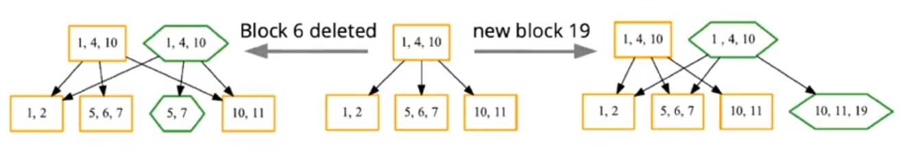
- Example: "copy" complete directory tree
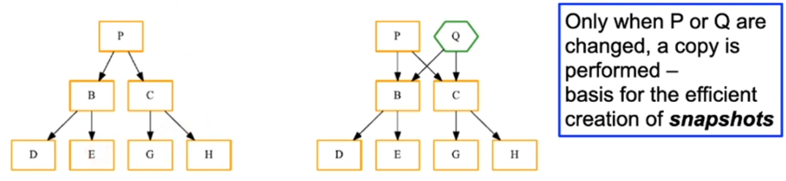
BTRFS: “butter” FS [2]
… according to developer Chris Mason ("comes from a CoW")
- Widely used on Linux, inspired by Sun ZFS
- Features: …very many…
- Fast writes: Special "CoW friendly" B+ trees
- Resource-saving snapshots
- No loss of data
- Atomic changes and checksums for all metadata and data
- Use of multiple disks
- Implements flexible RAID: differentiates between data and metadata
- Size changes while the system is running
- Data compression
Conclusion
- Modern file systems…
- consider the properties of current hardware: large main memories (cache), fast parallel CPU cores, …
- have many new features: snapshots, volume management, redundancy, …
- Basic design decision: Should this functionality be implemented in the file system (or rather at a lower layer)?
- Pro:
- more flexibility
- possible to make use of knowledge about the file system structure, e.g. different RAID levels for data and metadata
- Con:
- All file systems would benefit from functionality implemented on the driver level
- Pro: